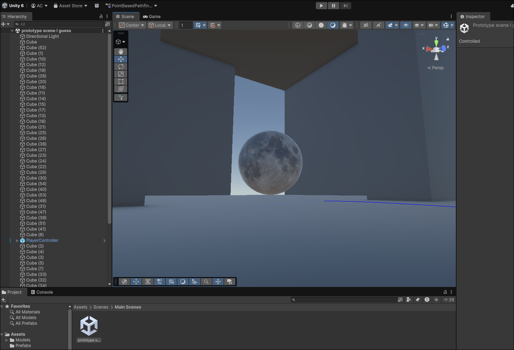

Sorry for the delay! I actually forgot how to add blog posts to this site. Because I kept forgetting, I added a handy dandy pice of documentation to my script which re-explains how to use it. Just in case here are detailed instructions for future me on how to access the documentation!
Open a Terminal
go to ~/Documents/Python/blogGenerator/
run python ./blog.py
mission complete! you've now been shown further instructions.
I'll edit this page when I add the script to my PATH
on another note, BFB development starts NOW. Or rather it started around a month ago. We've mostly been floundering around so far. (I've had game jam projects with more work done than this at this point) I've finally finished the most time consuming of my classes thus far and now have alot of free time. As such I now have had time to create this blog post in all its glory. A lot has happened since the last blog post and I'm now going to begin the tale of BFB, Initial Commit.
Development began with an idea. I was in a discord call with my friend and co-conspiritor and we decided on the core story beats of the game. In addition we made a power point slide pitch deck with a somewhat ridiculus concept of a game. We wanted to make a horor type game so we came up with the idea of Stuck in a Spaceship With a Bioweapon Who Hates Humans But Likes to Flip Burgers. (We refer to it as BFB in short hand for burger flipping bioweapon.) The game idea was well recived by the group of friends we presented it to. We also enlisted the services of my 3D modeler/song writer friend and co-conspiritor as well as another friend who is making concept art for the game, the logo we've been using, and whatever other 2D art we need for the game. With the team assembled, it was time to start work on the game.
Or at least I thought it was.
Since then minimal progress has been made and our 3d modeler will soon be suffering from the condition known as employment. With that in mind and my class ending around a week ago we can finally, truely begin development. It's been a while but the game is still fresh. We have in fact moved pass the "Initial commit" and begun to engage in the development grind. I've almost completed the custom pathfinding algorith we'll be using and we should have the first prototype design of the monster hopefully done before the employment condition takes its full effect on our 3d modeler. With that in mind It's probably about time I explain the idea of the game and maybe a goal or two about our development cycle.
I don't want to share too much about the game's story or mechanics, but essentially you're on a space ship and are forced to make burgurs. The game is 3d and the core mechanics are just standard 1st person horror game mechanics; walking, sprinting, crouching, small inventory, hiding from monsters, and maybe a few weapons. We'll see how much of that stays in after playtesting. Beyond that there will be the core "mini-game" of making the burgers for the monster with whatever ingreedients you can find in the rest of the ship. At the same time you have to stop the ship from completely falling apart, while also exploring the enviorment.
I would like to finish the bulk of the game by the end of summer, but we'll see how early development goes and then I'll have a better idea of both what we're making and how long it will take our team to make. First play tests will probably come during the beginning/just before summer to test out the very first demos and prototypes, however some things are changing and even that is not set in stone yet. What I do know is that the bulk of the player controller prototype and enemy prototype will be done by the end of the week. I'll probably have the next update here around then and I'll also share my journey with implementing A* for the first time.
thanks for reading! I'll catch ya in a week